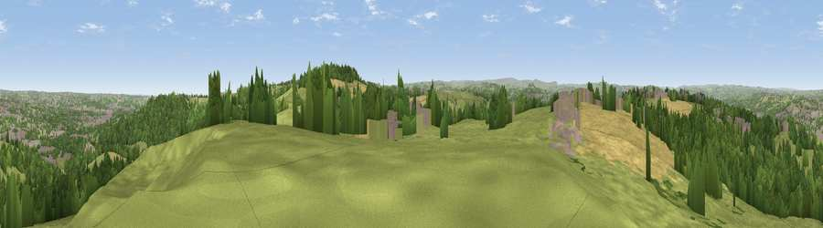

Viewpoint near Upper Hopton
#8380 in England · top 7% of its area beats it · near Upper HoptonThe view, rendered

A 360° render of this exact spot computed from the terrain model, tree cover and land cover — summer colours, afternoon light, calibrated against photographs of famous viewpoints. Real trees, hedges and buildings will differ in detail.
The panorama
Grey silhouette: terrain skyline in each direction (720 bearings, Earth curvature and refraction included). Dashed green: skyline with trees (+15 m) and buildings (+8 m) as obstacles. Blue strip: how far the ground is visible on each bearing.
Where the view opens
Wedge length = distance to the farthest visible ground on that bearing (vegetation-aware). Rings at 10, 25 and 50 km.
What fills the view
49% grassland · 30% woodland · 11% cropland · 10% built-up
Angular shares of the visible panorama (visual magnitude), not map area. Landscape diversity 0.52 (0–1 Shannon).
Key numbers
More beautiful places nearby
The staircase of upgrades: each row has a higher view potential than everything closer. Driving times are estimates from straight-line distance, calibrated against real road routing — check an actual route before setting out.
| Place | Direction | Drive | Score |
|---|---|---|---|
| Viewpoint near Kirkheaton | W · 1 km | ~4 min | 67.2 |
| Viewpoint near Kirkheaton | WNW · 2 km | ~5 min | 68.0 |
| Viewpoint near Grange Moor | SE · 3 km | ~7 min | 69.8 |
| Castle Hill | SW · 6 km | ~13 min | 70.2 |
| Viewpoint near Jackson Bridge | SSW · 11 km | ~21 min | 73.5 |
| Viewpoint near Wharncliffe Side | SSE · 24 km | ~39 min | 75.0 |
| Viewpoint near Wharncliffe Side | SSE · 24 km | ~40 min | 75.2 |
| Viewpoint near Greenfield | SW · 25 km | ~40 min | 76.0 |
53.65653, -1.69678 · source: screening · position refined by local search. Computed location — check access rights before visiting.